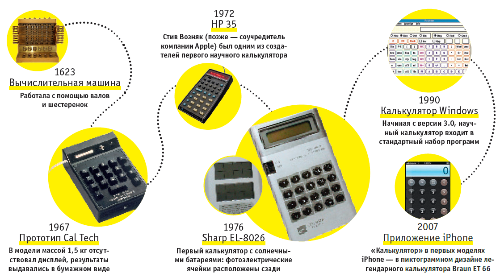
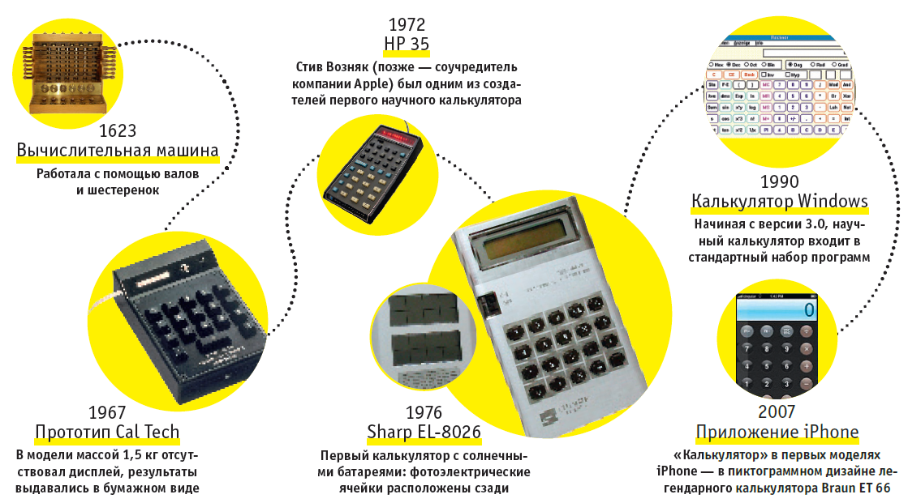

Калькулятор
Учебные материалы
Современный калькулятор прошел богатую историю. Изобретателя самого первого примитивного калькулятора звали Вильгельм Шиккард.
Он в 1623 году разработал вычислительный механизм, который был способен слагать, вычитать, умножать и делить.
Устройство своей внешностью и принципом действия сильно напоминало часы.Отсюда и его название – «считающие часы», которые любил использовать Иоганн Кеплер.
Усовершенствования «математических орудий» предпринимались Паскалем, Лейбницем, Томасом.
Последний в 1820 году представил научному обществу довольно таки неплохой прототип ручного калькулятора.
Первый же электронный калькулятор был изобретен в 1961 английскими учеными.Однако его габариты не придавали ему портативности.Проблема размеров была решена спустя 10 лет в Америке,
где начал свой триумфальный путь микрокалькулятор, который интенсивно усовершенствуется до сегодня.Сейчас калькуляторы встроены во всевозможные гаджеты.


-Математический портал, на котором вы найдете любой материал по математическим дисциплинам:
Allmath.ru
-Материалы для самостоятельного изучения математики со множеством примеров и задач для самостоятельного решения, интересные статьи о математике,обучении и образовании: Математика,которая мне нравится
-Первый номер журнала "Квант" вышел в 1970 году.Материалы, накопленные в журнале за четыре десятилетия,бесценны: Архив номеров "Кванта">
-Материалы для самостоятельного изучения математики со множеством примеров и задач для самостоятельного решения, интересные статьи о математике,обучении и образовании: Математика,которая мне нравится
-Первый номер журнала "Квант" вышел в 1970 году.Материалы, накопленные в журнале за четыре десятилетия,бесценны: Архив номеров "Кванта">